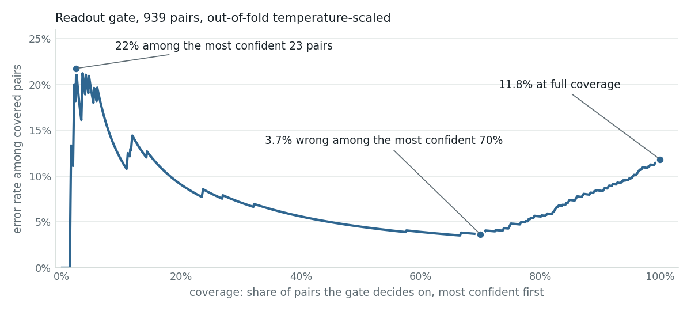

What the confirm card should show once it has a probability
The gate question gives the card one calibrated number for every proposed write. This page is about the line that number becomes: three sentences, one pair of thresholds, and why the thresholds should depend on what the command can break.
results/gate-qwen3-4b-q4_0-cpu.json (the 4B readout, 939 pairs, on the development host) re-analysed by a new script, bench/card_thresholds.py, whose output is results/card-thresholds-qwen3-4b-q4_0-cpu.json; from jevlet/integrations/lance_local.py; and from the dataset's blast labels. No new model runs.The card today, and with one more line
Today the card shows what the model proposed: the rendered command and the model's free-text reason, above the approve and deny controls. Every word on it was written by the model that may have misread the request, and nothing on it says how sure anything is. A generated tool call is a one-hot event, and the compiled NPU (neural processing unit) path exposes no logits, so the card cannot read a probability off the serving stack either.
With the gate, the card gains exactly one line. annotate_proposal builds a state from the request, the proposed call and the catalog's one-line description of the command, asks one NOUL (a yes/no question answered with a probability), matches_request, and maps the calibrated probability to one of three bands. The sentence names what the command's semantic class does; the ten write commands map onto ten classes (OP_CLASS), each with one fixed clause (CLASS_TEXT). The hook's docstring is the design rule: "Never blocks; the human still clicks."
Three states, three sentences
The hook returns a level and a sentence. With the defaults (ok_above=0.85, mismatch_below=0.4) the rule is: "ok" at p ≥ 0.85, "mismatch" at p ≤ 0.4, "check" between. The three cards below are real pairs from the gate receipt: the operator text is a paraphrase row, the proposal is the call the generative 4B actually made on it, and p is that pair's out-of-fold temperature-scaled probability. The sentences are produced by annotate_proposal itself, unedited.
Reason: the model's own sentence, shown unchanged.
Reason: the model's own sentence, shown unchanged.
Reason: the model's own sentence, shown unchanged.
The three cards are the PoE-versus-shutdown pair seen from three sides: a shutdown that was asked for, a PoE cut that was asked for, and a shutdown that was not. The third is one of the two "cut the power" rows the agent turned into disable_port; both sit at p = 0.28. The "catalog" line is the description the gate state carries; the reason line is a placeholder for the model's text.
The ten clauses
| command | class | clause (CLASS_TEXT, verbatim) |
|---|---|---|
| disable_port | port_admin_down | shuts the interface down (link AND PoE power go down until re-enabled) |
| enable_port | port_admin_up | brings the interface back up |
| configure_poe_mode | poe_power_on_off | changes PoE power delivery only; the link stays up |
| configure_poe_power_limit | poe_limit | caps the PoE wattage on the port |
| configure_access_vlan | access_vlan | puts the port in one untagged VLAN (access port) |
| configure_trunk_allowed_vlans | trunk_vlans | makes the port a trunk with an allowed-VLAN list |
| configure_port_speed | port_speed | changes the port speed |
| configure_port_duplex | port_duplex | changes the duplex setting |
| set_port_description | port_description | changes the port label only |
| create_vlan | vlan_create | creates a VLAN |
A command outside the map (a read, or diagnose_port_issues) falls back to its bare name in the sentence. The clause is chosen by the proposal's class, not the request's, so the mismatch card names what will happen, not what was asked; the operator supplies the other half.
Choosing the operating point
The table sweeps the card's cut-off over the 195 calls the generative model actually made on the paraphrases (161 do what was asked, counting the 10 format slips; 20 are command confusions, 13 propose a diagnosis instead of a read, 1 has a wrong parameter) and over the synthetic negatives (260 swapped operations, 140 of them dangerous pairs, and 224 wrong ports). "Flagged" means p below the threshold, "accepted" means p above it.
| threshold | real confusions flagged of 20 | dangerous among them of 16 | diagnose-instead flagged of 13 | correct calls false-flagged of 161 | dangerous swaps accepted of 140 | any swapped op accepted of 260 | wrong port accepted of 224 |
|---|---|---|---|---|---|---|---|
| 0.3 | 15 | 15 | 7 | 19 | 3 | 27 | 1 |
| 0.4 · default | 15 | 15 | 7 | 25 | 1 | 22 | 0 |
| 0.5 | 15 | 15 | 7 | 32 | 0 | 19 | 0 |
| 0.7 | 15 | 15 | 7 | 45 | 0 | 15 | 0 |
| 0.85 · default | 15 | 15 | 7 | 65 | 0 | 9 | 0 |
| 0.9 | 15 | 15 | 7 | 76 | 0 | 8 | 0 |
Calibrated p (five out-of-fold temperatures of 6.45, 6.45, 6.45, 6.02, 6.02, folds grouped by seed request), exactly as the summary computes it. Two reconciliations with the results page, which counts the same pairs differently: its "30 of 151 correct calls false-flagged" is this table's 32 of 161 at 0.5, minus the 2 format slips it counts separately; its "1 of 156 dangerous swaps accepted" is these 140 synthetic swaps plus the 16 real dangerous confusions, and the one accepted is a real call.
Two things are visible at once. The catch columns do not move: the same 15 confusions and the same 7 diagnose-instead calls are flagged at 0.3 and at 0.9. The false-flag column is the whole story of the threshold, rising from 19 to 76 correct calls. The reason is that the readout's probabilities on the real misses are bimodal. Twelve access-VLAN requests that became trunk configurations sit at p = 0.04 to 0.07; the three calls that became disable_port (two PoE cuts, one speed change) sit at 0.28; then nothing until 0.91. The five confusions above 0.9 are out of reach of any threshold: four are show_vlan_config answered with show_vlan_membership (reads, p = 0.96 to 0.97) and one is a PoE limit turned into a PoE mode change at p = 0.91, the single dangerous miss.

show_vlan_config versus show_vlan_membership substitution, and the other 2 are a port-status/PoE-status swap and the one wrong-parameter call. The gate is most confident exactly where two commands show overlapping information. Drawn from the same receipt by bench/card_thresholds.py --fig; the results page's curve is the 217 held-out pairs.For the defaults this says: the mismatch threshold can sit anywhere from 0.3 to 0.5 without changing a single catch on the real calls, and 0.5 is where the synthetic dangerous swaps stop being accepted (3 at 0.3, 1 at 0.4, 0 at 0.5), so 0.4 is the middle choice and 0.5 the cautious one. The ok threshold is a pure cost dial: at 0.85, 65 of 161 correct calls miss the ok sentence (40 land in check, 25 in mismatch); at 0.7, 45 do.
An operator cost model
A threshold trades two costs that fall on different people at different times. A false flag costs the operator a reading: a sentence, a number, a glance at the command, on a call that was fine. A missed dangerous call costs whatever the command breaks, for as long as it takes someone to notice and revert. The dataset labels the second cost per request as blast, on five levels: 0 none, 1 negligible, 2 brief and self-recovering, 3 down until reverted, 4 segment outage. The 259 authored evaluation rows carry it: 167 at 0, 23 at 1, 10 at 2, 54 at 3, 5 at 4. Reading cost was not measured here, so the model stays symbolic: at threshold t, for an action class c, expected cost is (false flags at t) × r + (dangerous misses at t) × B(c), with r the reading cost and B rising with the blast level.
The second term does not move with t on this data, so the sum is minimised by the lowest threshold that still catches what is catchable. That would argue for one low threshold everywhere if r and B were the same for every command. They are not, which is the case for per-class thresholds. The table joins the blast levels the authored rows attach to each command with what the gate did to the real proposals of that class.
| proposed class | blast levels in the authored rows (rows) | real proposals | wrong | wrong flagged at 0.4 | correct false-flagged at 0.4 |
|---|---|---|---|---|---|
| port_admin_down | 3 (13) | 17 | 3 | 3 | 2 |
| trunk_vlans | 1 (1) · 3 (7) · 4 (3) | 12 | 12 | 12 | 0 |
| access_vlan | 3 (7) · 4 (1) | 6 | 0 | · | 3 |
| poe_power_on_off | 1 (8) · 3 (18) | 9 | 1 | 0 | 4 |
| poe_limit | 1 (4) · 2 (2) · 3 (2) | 13 | 0 | · | 0 |
| port_speed | 2 (8) · 3 (1) | 26 | 0 | · | 6 |
| port_admin_up | 1 (6) | 16 | 0 | · | 4 |
| port_duplex | no authored rows | 17 | 1 | 0 | 1 |
| port_description | no authored rows | 12 | 0 | · | 3 |
| reads (the seven show_* commands proposed) | 0 (19) | 54 | 4 | 0 | 2 |
| diagnose_port_issues | 0 (39) | 13 | 13 | 7 | · |
Blast is a label on the request, not on the command, so one command spans levels: a PoE cut is 3 on all 18 of its rows, while the 8 blast-1 rows of the same command are PoE power-ons. The four wrong reads are show_vlan_membership for show_vlan_config; the diagnose row's 13 proposals answered read requests with a diagnosis, which the design notes call defensible. Rows are 6 to 54 proposals each.
Three tiers fall out, and the table says what each would have done on these 195 calls.
- Blast 3 to 4 (
port_admin_down,access_vlan,trunk_vlans,poe_power_on_off): keep mismatch at 0.4 or raise it to 0.5, keep ok at 0.85, keep the imperative "Read the command before approving." Here the gate flagged 15 of 16 wrong proposals and false-flagged 9 of 28 correct ones: nine readings against a camera or a segment down until someone reverts it. - Blast 1 to 2 (
port_admin_up,port_speed,poe_limit,port_description,port_duplex): keep the mismatch line, lower ok to 0.7 so fewer correct calls read as uncertain, drop the imperative. One wrong proposal in 84, unflagged; 14 correct ones false-flagged at 0.4. - Blast 0 (reads and diagnostics): show the sentence, never the alarm styling. The misses here are read-for-read and diagnose-for-read substitutions, so the worst outcome is a wrong screen; the 7 flagged diagnose calls want a neutral "this runs a diagnosis rather than a status read", not a warning.
Per-class thresholds are one line in the hook: ok_above and mismatch_below are already parameters of annotate_proposal, and the caller can pass them by OP_CLASS. The tiers are a proposal read off this table, not a measured policy, and the blast labels are LLM-authored with human review pending.
Copywriting rules for the sentence
- Effect first, verdict second. All three sentences open with "Check: this" followed by what the command does; the match to the request comes after. The operator reads what will happen before reading how sure the gate is, which is the order that survives a skim.
- One clause per class, in switch terms. The ten clauses say "link AND PoE power go down", "the link stays up", "one untagged VLAN", "a trunk with an allowed-VLAN list": the distinctions the dangerous pairs turn on. A clause that would be true of both members of a confusable pair is useless on this card.
- The number stays. Every sentence prints p to two decimals. It is the only thing on the card that was calibrated, and the only thing the operator can learn to read over time. Do not round it into words.
- Match the tone to the band's contents. On this data the check band holds 40 correct calls and 0 wrong ones, so "the match to your request is uncertain" is a phrase that will be wrong-footed on every call it appears on. A neutral form such as "compare the port and value with your request" says what to do without implying an error.
- The alarm gets the imperative. Only the mismatch sentence ends with an instruction ("Read the command before approving."). Keep it that way: an imperative on every card is an imperative on none.
- Say "matches your request", never "safe" or "correct". The gate scores whether the proposal does what was asked, not whether what was asked was wise. A faithful execution of a bad request scores high.
- House style. The mismatch sentence in the code joins its two halves with an em-dash and shouts "NOT" in capitals. A colon and a plain "not" read the same on a screen reader and better on a small one; the capitals can go once the band styling and the imperative carry the weight.
What never happens
- Nothing executes on a probability. The Approve button is the same button, and Jev's own operating rule, "act automatically above 0.9", is deliberately not applied to device writes. The human confirm is the product's invariant.
- The gate never blocks and never rewrites. It cannot deny a proposal, delay it, or substitute the command it thinks was meant; it may only flag. At p = 0.99 it still approves nothing.
- The sentence never replaces the command. The rendered command stays on the card in full; the check line points at it ("Read the command"), it does not stand in for it.
- The reason is not an input. The gate reads the request and the proposal, not the model's justification, so a fluent wrong reason cannot talk the number up.
Accessibility: never color alone
- Each band is carried three ways: a color (the ok, warn and bad tokens with their soft backgrounds), a word in the level field (ok, check, mismatch) that should be rendered as text on the line, and the sentence itself, whose wording differs per band ("matches your request", "is uncertain", "may NOT be what you asked for"). A screen reader gets the band from the sentence with no styling at all.
- The number is text, never a bar or a gauge on its own. A meter without the printed value is color alone by another name.
- The check line should be an
aria-live="polite"region: it arrives about 3 s after the card, and an operator already reading the command should hear it land. - Contrast in both themes: the shell's dark palette re-tokens every band color, so the line reads on a dark card without a light-mode assumption anywhere in the markup.
What to log for recalibration
The thresholds are meaningless until the probabilities have been calibrated on the deployment's own labeled rows, and they stay meaningful only while nothing upstream moves. Two facts from the study set the logging policy. The temperature here is about 6.4, fitted out-of-fold on seed-grouped folds; and a rerun of the earlier phrasing of the same gate question on the same 400 pairs lowered the mean p(yes) on correct proposals from 0.80 to 0.71 and flipped 21 of 400 decisions at 0.5, with AUROC (area under the receiver operating characteristic curve) unchanged at 0.957 against 0.958; the study's first pass had recorded a 0.6 gap, most of which a controlled rerun attributes to other prompt lines. A prompt edit moves the operating point with the ranking nearly unchanged. Log enough to refit.
| field | why |
|---|---|
| request, command, params, description | the gate state, verbatim; the row shape bench.analyze already consumes (input, command, params, p_yes, logits) |
| logits (both), p_raw, p_cal, T, T_fit_date | the temperature is refit from logits, not from p; the fit date tells you which prompt and model it was fitted against |
| band, sentence, thresholds in force | what the operator actually saw, so a later threshold change can be evaluated against the old one |
| op_class, blast (if labeled) | per-class thresholds need per-class counts; 20 confusions across ten classes is thin already |
| click (approve / deny / edit), time to click | a weak label and the only measurement of reading cost the product will ever get; an approve is not ground truth, an edited-then-approved call is a strong signal of a miss |
| backend id, model hash, prompt hash, latency | any change in these invalidates T; the latency budget on the board is 3.1 s per check |
Review the weak labels in batches, group by seed request before fitting, and refit out-of-fold; publish the reliability diagram beside the threshold table each time. The study's own procedure was a few hundred labeled rows; the same count from production, with human labels, would be the first data this card has ever been tuned on that was not LLM-verified.
How the pre-turn hint fits
The gate is the second of two hooks. The first, pre_turn, runs before the generative model and asks two questions of the request alone: which tool (an 8-way CHOICE) and whether it is a write (a NOUL). It uses the answers in two ways. If the tool answer's confidence, the concentration statistic (K·max p − 1)/(K − 1), is at least 0.6, the tool's profile is loaded: the two core schemas plus two more, four in the 4K context. If the request is probably a write (p > 0.5) but the tool is uncertain (confidence below 0.6), one line is appended to the system prompt for that turn.
| profile | the four schemas loaded |
|---|---|
| default | query_device_info · configure_device_setting · diagnose_port_issues · search_documentation |
| diagnose | core + diagnose_port_issues · search_documentation |
| events | core + get_network_events · diagnose_port_issues |
| camera | core + get_camera_detections · search_documentation |
| cable | core + calibrate_cable_baseline · diagnose_port_issues |
| docs | core + search_documentation · diagnose_port_issues |
"core" is query_device_info and configure_device_setting. The hint says "state your reading", not "ask the operator which", because the on-board assistant passes no conversation history into the turn: a clarifying question would have nowhere to land. The wording puts the model's interpretation on the card instead, where the gate's sentence and the human can check it.
Cost on the board: the two pre-turn questions from the readout take 1.28 s and 1.23 s, the gate question 3.1 s; the fine-tuned encoder answers a NOUL in 126 ms, which is why the study assigns the per-turn hook to the encoder. The gate stays with the readout: the encoder trained on synthetic pairs did not learn it (AUROC 0.556 on the held-out pairs against 0.967 for the readout).
What this rests on
- One backend (the 4B readout), one gate receipt, one seed-grouped calibration. The catch counts stand on 20 confusions and 13 diagnose-instead calls; N is in the hundreds everywhere on this page and in the tens in the cells that matter most.
- The blast levels and the adversarial rows are LLM-written and LLM-verified, with human review pending. The tier boundaries above inherit that status.
- All probabilities were produced on the development host with the same weights and binary family that run on the board; the board contributed the latency numbers only.
- Reading cost was not measured. The cost model is a shape, and the click-time field in the log is how it gets numbers.